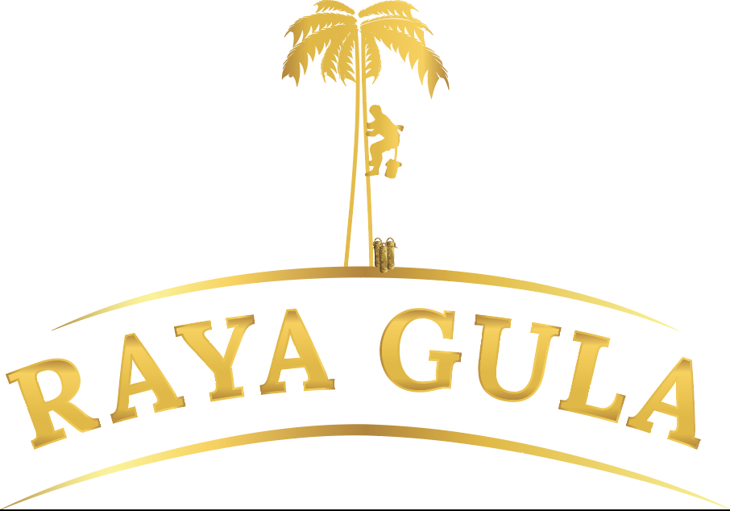
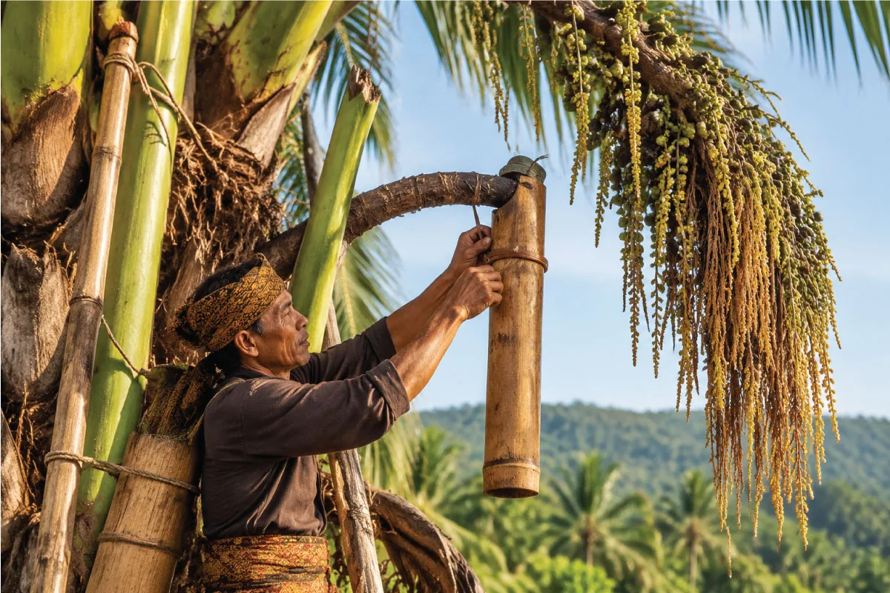

OUR PROCESS / 01
Pemanenan Nira ArenPalm Nectar Harvesting
Setiap tetesan nira menjadi awal perjalanan gula aren Indonesia yang autentik.Every drop of palm nectar begins the journey of authentic Indonesian palm sugar.

← Kembali ke Proses Raya Gula
Setiap produk Raya Gula berawal dari proses panjang yang dilakukan dengan penuh perhatian. Sebelum menjadi gula aren berkualitas, perjalanan dimulai dari pohon aren Indonesia yang tumbuh di lingkungan alami Nusantara.Every Raya Gula product begins with a carefully managed journey. Before it becomes quality palm sugar, the process starts with Indonesian sugar palm trees growing in the archipelago’s natural environment.
Pohon aren menghasilkan nira alami yang menjadi dasar terbentuknya karakter rasa khas gula aren. Melalui pemilihan pohon yang tepat dan proses penyadapan yang dilakukan secara hati-hati, petani menjaga kualitas nira sejak tahap awal.Sugar palm trees produce natural nectar that gives palm sugar its distinctive flavour. By selecting suitable trees and tapping them carefully, farmers help protect nectar quality from the very beginning.
Pemanenan nira dilakukan dua kali dalam satu hari, yaitu pada pagi dan sore hari. Waktu pemanenan yang teratur membantu nira yang diperoleh segera dikumpulkan dan dipersiapkan untuk memasuki tahap pengolahan berikutnya.Nectar is harvested twice a day, in the morning and afternoon. This regular schedule allows the collected nectar to be gathered promptly and prepared for the next stage of processing.
Di balik setiap hasil panen terdapat pengalaman dan ketelitian para petani dalam melakukan penyadapan. Setiap tetesan nira dikumpulkan dengan perhatian agar bahan baku tetap segar dan siap diproses.Behind every harvest are the farmers’ experience and precision. Each drop is collected with care so the raw ingredient remains fresh and ready for processing.
Raya Gula menghargai peran petani aren sebagai bagian penting dalam perjalanan produk. Proses pemanenan bukan hanya mengambil hasil alam, tetapi juga menjaga hubungan antara manusia, pohon aren, dan lingkungan.Raya Gula values palm farmers as an essential part of the product journey. Harvesting is not simply about gathering a natural resource; it is also about respecting the relationship between people, sugar palms, and the environment.
Melalui proses yang bertanggung jawab, Raya Gula menghadirkan gula aren dengan tetap menghargai nilai dan kearifan lokal Indonesia.Through responsible practices, Raya Gula creates palm sugar while honouring Indonesia’s local values and knowledge.
Setelah proses pemanenan selesai, nira aren segera dipersiapkan untuk memasuki tahap berikutnya, yaitu penyaringan. Dari sini, perjalanan nira berlanjut melalui proses pengolahan yang modern dan terjaga.After harvesting, the nectar is prepared for filtering. From this point, it continues through a modern, carefully controlled processing journey.